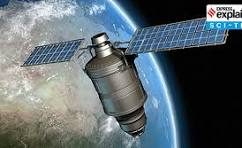

| Back to main |
India's Contributions to Satellite Technology and GSAT |
GSAT (Geosynchronous Satellite) is a series of communication satellites launched by India's space agency, ISRO. These satellites help India with telecommunications, broadcasting, weather forecasting, and more.Also with an objective to make India self-reliant in broadcasting services. The system includes a total of 168 transponders (out of which 95 are leased out to provide services to broadcasters) in the C, Extended C and Ku bands, providing services to telecommunications, television broadcasting, weather forecasting, disaster warning and search and rescue operations.
India's space agency, ISRO, has made incredible contributions to space exploration, including the successful missions like Chandrayaan (Moon), Mangalyaan (Mars), and many satellites like GSAT for better communication. it also has launched numerous satellites and conducted planetary exploration missions using indigenously developed rockets. Major missions: NavIC, Gaganyaan mission, Chandrayaan missions, Mangalyaan, Aditya L-1, NISAR, LUPEX, Shurayaan 1, LUPEX, Mangalyaan 2, and Chandrayaan 4.